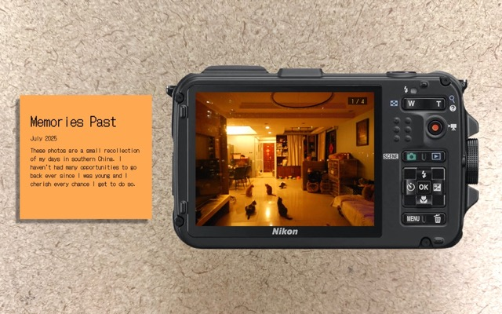
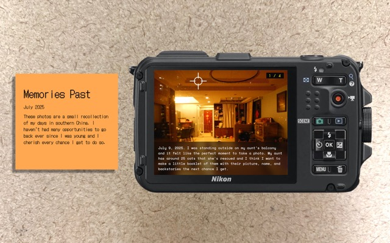
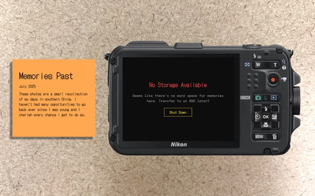

EC Studio Process Visualizations

The main area of improvement I am focusing on in this EC studio project is the visual design. In order to further the narrative and personalization of my Everyday Picture project, I am making changes to the styling of the header and replacing the current text to something more of an introduction. I will also add an image of a table surface as the background to ground the user in the theme of reviewing the past in a personal space.

To make the interactions with the camera, photos, and stories more immersive, I will integrate the story text to have a more transparent background and warmer color. I will also implement a frame counter to provide the user more clarity on the amount of photos there are. Additionally, I will change the default cursor to a custom crosshair cursor to further immerse the user in the experience of interacting with a camera.

The final visual change will be restyling the end overlay in which the header will blick red and the button will be yellow when hovered on. This is to make the end overlay more tied to the narrative and camera functions with more responsive interactions.